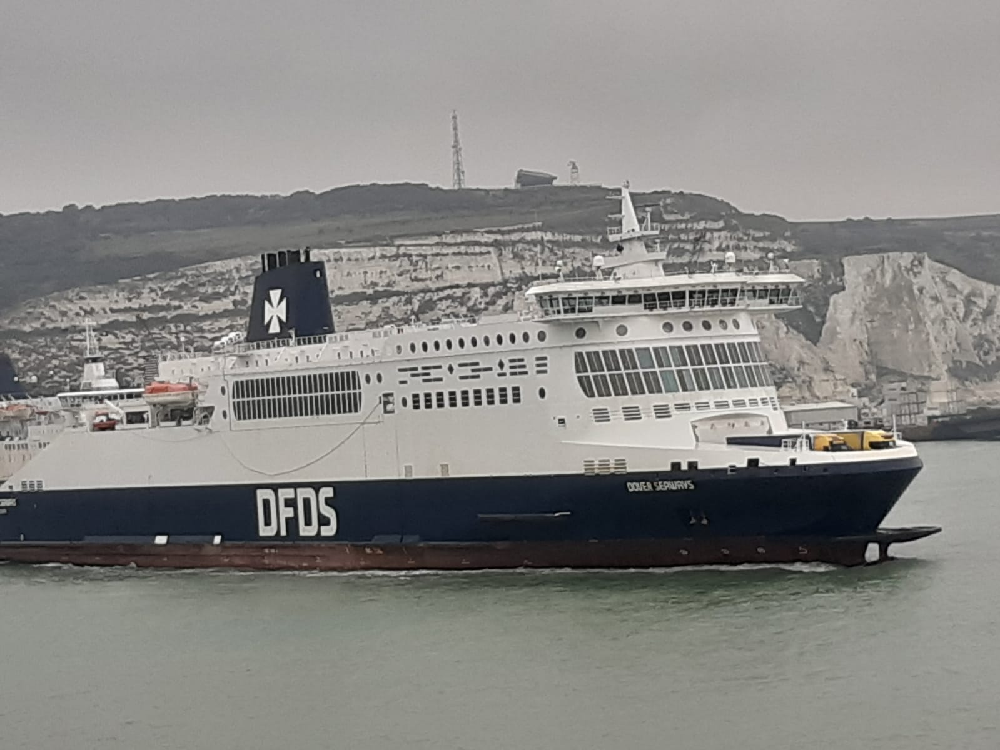
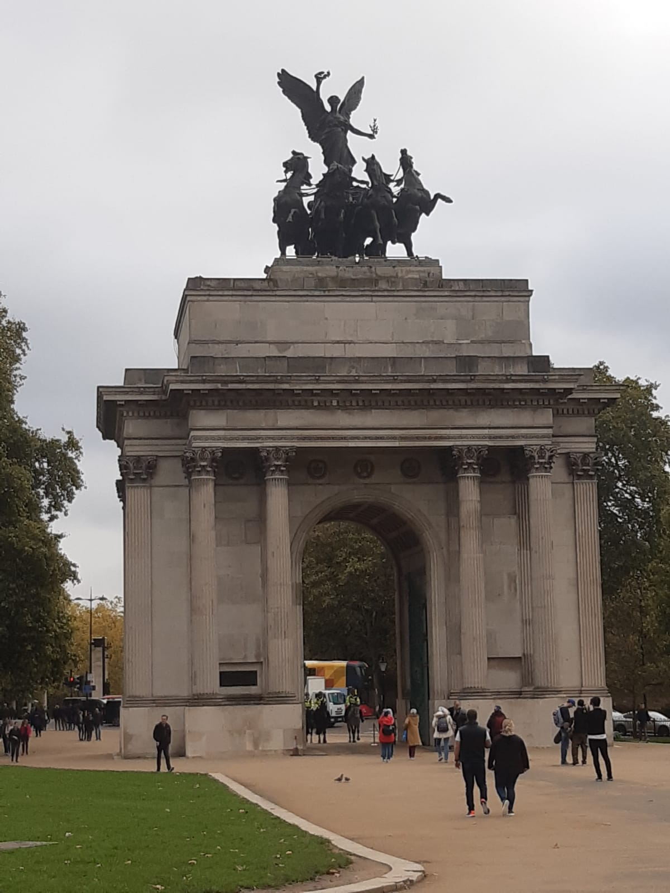
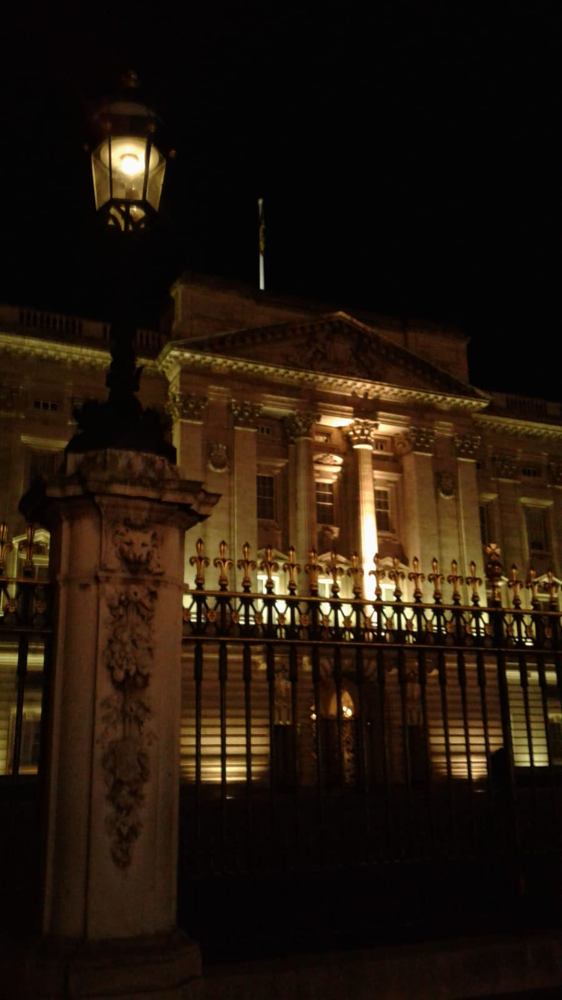
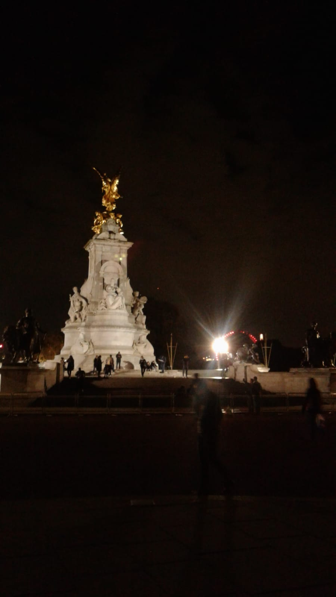

We zijn met een tourbus naar londen toe gegaan. Deze bus ging door belgië heen en Maakte via frankrijk de oversteek naar Engeland met een veerboot. Toen we in Engeland aankwamen gingen we weer de bus in waar we nog 4 uur in hebben gezeten het grootste deel hiervan stonden we in de file. Toen we daar aankwamen hebben we nog gegeten en zijn we vervolgens gaan slapen. We hadden in totaal 10 uur in de bus gezeten.
In London hebben we veel gezien. De eerste 2 dagen zijn we vooral winkels in geweest.In de avond van de eerste dag hebben we wel een avondtour gehad dit was erg mooi. De 3de dag zijn we naar musea en de Tower bridge geweest.Ook zijn we bij buckingham palace geweest deze dingen waren erg mooi om een keer in het echt te zien.Het was erg mooi om een keer in London te zijn geweest maar het was ook erg vermoeiden de drukte en de lange afstanden. Gelukkig hadden we wel een pasje voor de metro waardoor we toch alles hebben gehad wat we wouden zien ondanks de afstanden.
  De terugreis was bijna hetzelfde als de heenreis.We zijn dit keer wel tussendoor wat gaan eten bij een tankstation in belgië.Verder was er niet veel gebeurd tijden de terugreis.